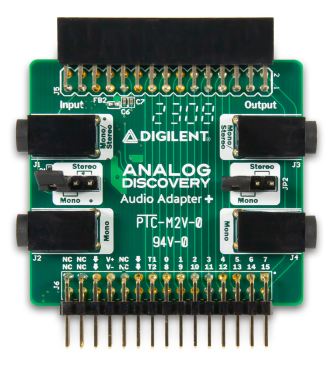
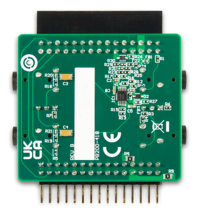
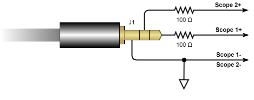
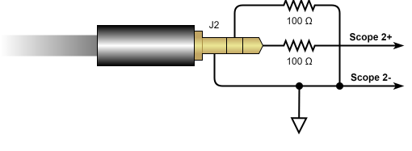
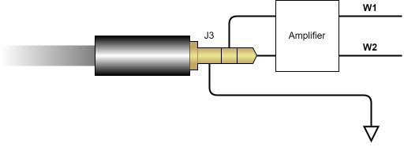
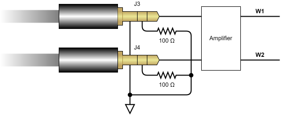

The Audio Adapter+ is a module that provides easy audio connectivity to the Analog Discovery. It is equipped with Mono and Stereo 3.5 mm audio connectors that provide signal paths to both the inputs of the oscilloscope and outputs of the arbitrary waveform generator. The Audio Adapter+ is equipped with a 2×15 MTE connector, which makes it compatible with the Analog Discovery 3, in addition to the Analog Discovery (Legacy), and Analog Discovery 2. An additional 2×15 MTE connector is loaded as a pass-through for digital signals, power supplies, and trigger pins so that these features are fully supported for your audio applications.

In order to function properly, the Audio Adapter+ must be provided with power from the Analog Discovery 3 power supplies. Active circuitry is used in the output amplifier and should be provided power through the use of the Power Supplies instrument in WaveForms. The Power Supplies should provide 1.5 V or greater through the positive supply rail, with tracking enabled to provide -1.5 V or the equivalent through the negative rail.
The audio outputs go through a voltage divider and an amplifier, which are used to scale down the output range from -5 to 5 V to between -1 and 1 V, in order to protect external audio equipment from inadvertent damage. The gain between the AWG output and the audio connector is roughly 1/5.
JP1 Stereo Scope channels 1+ and 2+ are connected to J1 left and right channels, respectively, and J2 is grounded.

JP1 Mono Scope channel 1+ is connected to J1, Scope channel 2+ is connected to J2.

JP2 Stereo AWG Channels 1 and 2 are connected to J3 left and right channels, respectively, and the J4 input is left floating.

JP2 Mono AWG Channel 1 (W1) is connected to J1, AWG Channel 2 (W2) is connected to J2

For more information, visit the reference page.